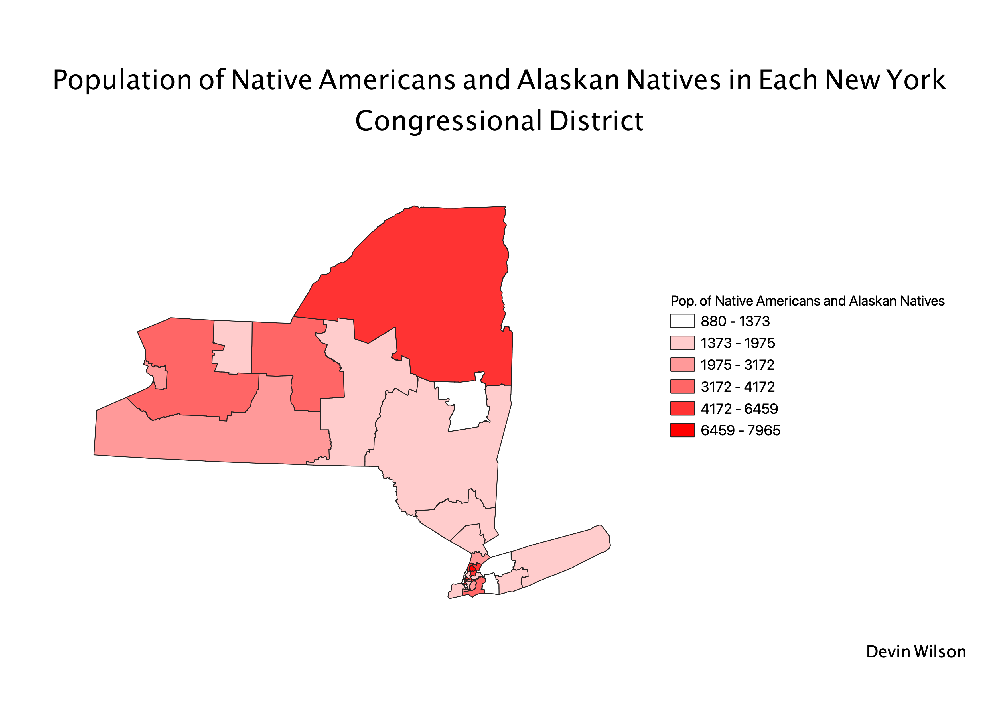

Homework 9: Native American Population In each Congressional District
Devin Wilson
My map depicts the number of Native American individuals living in each New York congressional district. The darkest pink counties indicate the highest number of Native Americans and the lightest counties have the least amount.
I chose to make a choropleth depicting congressional districts in New York because it is a state with a high rate of disparity among citizens. I chose Native American people to represent on the map because I did not know much about the
New York Native population.

Data used for this project
Link to cleaned CSV dataset
Link to geoJSON
Link to CSV source